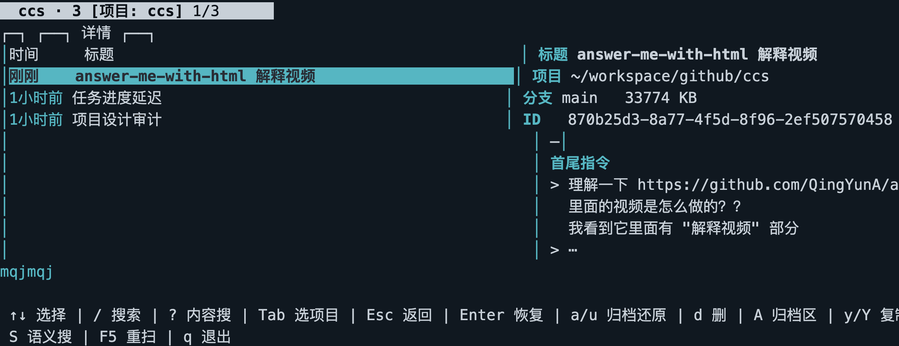
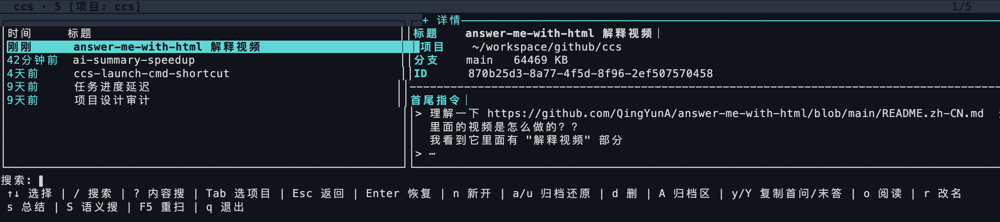
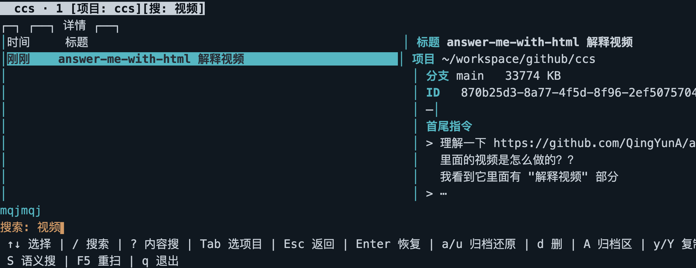
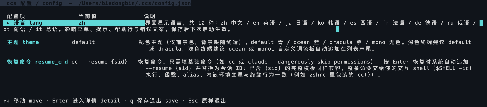

ccs
Find every Claude Code session, across all directories
claude --resume
only lists
this directory
's sessions — switch repos and they're gone
ccs
Every project in
one list
· Enter
resumes in its original directory
$
ccs → ~/.local/bin ✓
One line ·
ready to run

Master list · every project
Detail pane · copyable
All shortcuts in one bar
Master–detail ·
copyable
detail pane · every
shortcut
in one bar
/
Press
/
to search: title / path / session ID


Type a keyword → the list filters live to 1 hit
$
ccs
10-20
Video: how answer-me-with-html renders explainer videos
870b25d3
$
claude --resume 870b25d3…
✓
Resumed in the session's original directory
chdir + exec in place · full context intact

10
languages
4+
themes
Custom
palettes
ccs
Find any Claude Code session, in any directory
$
curl -fsSL https://raw.githubusercontent.com/biedongbin/ccs/main/install.sh | sh
github.com/biedongbin/ccs